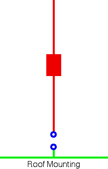
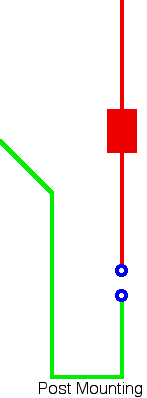
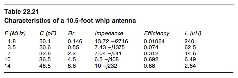

Basics
Antenna efficiency is an elusive quantity that is difficult to quantify. We can calculate it closely enough if we know three things: the ground losses, the radiation resistance, and the coil Q. Unfortunately, we don't know any of these values with any certainty, although we can use an antenna analyzer to measure their total series value — the input impedance in other words. Since these values are in series with one another, changing one has an effect on the others.
📡 Antenna Efficiency Estimator — see exactly where your 100W goes →
A good example of this complexity is the addition of a cap hat. A cap hat adds capacitance to that portion of the antenna above the loading coil. No matter where it is placed along that length, it adds the same amount of capacitance. This will cause the input impedance to increase. However, the change in input impedance may be due to an increase in radiation resistance, or to additional resistive (Q) losses in the coil, depending on where along the length the cap hat is installed.
Accurately calculating efficiency cannot be done with simple test tools or anecdotal formulas commonly found on the internet. However, we can get a lot closer if we know a few basic facts about the input impedance (total losses). There are other losses combined with the input impedance — stray capacitance and conductor losses are the main ones. Since they're usually small compared to the other losses, we can ignore them for this analysis.
Ground Losses
Ground losses (Rg) dominate the efficiency equation, and keeping them low is a worthy exercise. The most important consideration toward that goal is proper antenna mounting. It is the metal mass directly under the antenna, not what's alongside, that counts. A ground strap to the nearest hard point is not a substitute for proper mounting — in fact, excessive and/or incorrect grounding can cause ground loops to occur, often masquerading as RFI.
Correct mounting places the antenna above a continuous metal surface (roof center). Incorrect mounting places it beside or beyond the ground plane edge (trunk lip, hood edge, bumper). This single factor has more impact on ground loss than any other installation decision.
Original photo not recoverable from PDF extractionThe average recognized figure for ground loss varies from 10 to 2 ohms (80 through 10 meters). It may be considerably higher than this value, but never lower. Lack of proper bonding, incorrect or missing control line chokes, poor mounting techniques, poor mounting locations, and incorrectly terminated coax feeds all play a part. And since ground losses are proportional to the square of the field intensity, if you double the field intensity, the power losses increase by four times. This is the main reason ground losses should be kept as low as possible, especially when using physically short mobile antennas.
RF current must return to its source. When we mount an antenna low, more of the return current is forced to flow through the lossy surface under the vehicle rather than the body of the vehicle. Wherever the coax connects to the antenna is where the ground plane must begin. If there isn't a mass of metal directly under this point, then ground plane losses increase.
Excessive ground loss also increases the level of RF flowing over the outside of the coax (common mode currents), and over whatever control lines are present. This is an exceptionally critical point if you're using or planning to use a computerized antenna controller.

Lastly, there are cases where ground losses take a back seat to coil losses. Short, stubby antennas are an example. It is not uncommon for the coil losses in these antennas to be 2 or 3 times the ground loss. This magnitude of coil loss is also why short, stubby antennas don't need matching.
Radiation Resistance
The only good loss is imaginary, and that's radiation resistance (Rr). It is imaginary in that it doesn't exist as a physical part of an antenna in the same sense as a loading coil, whip, or mast. It is, however, real with respect to mathematical calculations.
In simple terms, Rr is a function of the effective electrical length (not the physical length), and how the current flows over that length. Thus, the longer the antenna's electrical length, the higher the Rr will be. The rate of change is a square law function: a 9-foot antenna will have about twice the Rr of a 6-foot antenna, and a 12-foot one will have four times the Rr of a 6-foot one. Rr may be as low as 0.2 ohms (80 meters) to about 36 ohms (full 1/4 wave on 10 meters).

Another way to increase the radiation resistance of an antenna is to use a cap hat. Properly designed and implemented, cap hats increase the effective electrical length and raise the current node. It is possible to increase Rr by a factor of 4, particularly on the lower bands. The key words are: properly designed and implemented. Done incorrectly, they will have the opposite effect.
For any given electrical length of an antenna, the radiation resistance it exhibits is the sum of the total power radiated by the antenna, divided by the square of the net current causing the radiation. It is a factor of the effective electrical length, so we must lengthen the antenna (electrically and/or physically) to increase it. The maximum practical physical length is about 11 to 14 feet (suburban versus rural). If you live east of the Appalachians, perhaps just 8 feet.
Coil Losses
Coil loss (Rc) is one of the most misunderstood aspects of mobile antennas. Part of the misunderstanding deals with the term Q, which stands for Quality. It is determined by dividing the inductive reactance in ohms by the resistive losses in the coil in ohms at the operating frequency. Under laboratory conditions, it is possible to obtain coil Qs in the 800 to 1,000 range. However, in the real world of mobile loading coils, it is difficult to obtain Qs over 250 when mounted as part of an antenna. Even this takes good construction practices.

With the possible exception of 10, 12, and sometimes 15 meters, all HF mobile antennas incorporate a loading coil. Although it adds physical length to the antenna, it does not increase the electrical length except in very special cases (long, skinny, linear loading is an example). An antenna loading coil is a lumped constant. Online sources which state that a loading coil replaces a given physical length of an antenna are in error.
The reason we need a loading coil is this: the input impedance of any antenna shorter than a 1/4 wavelength will exhibit capacitive reactance (-j). To cancel out this negative reactance, we incorporate a loading coil with equal but opposite reactance (+j). The shorter the antenna in terms of wavelength, the larger the coil's reactance must be — along with a corresponding increase in coil losses.
Excessive distributed coil capacitance also reduces coil Q. Good examples are large end caps and/or metal shorting plungers, and antenna mounting locations that place the coil too close to bodywork (shunt capacitance). The worst case is mounting a cap hat directly atop the coil rather than at the very top of the antenna where it belongs.
Large diameter coils (>3.5" OD) do not have higher Q ratings — the opposite is true. Large coils have more distributed capacitance than smaller ones, and a lower self-resonance point, making them very lossy at higher frequencies. The optimal coil size and construction: approximately 3 inches OD, 6 TPI, using #10 silver-plated wire.
You cannot measure a coil's Q once it's assembled within the antenna. So it isn't uncommon for antenna manufacturers to publish their static (bench) Q measurements and apply them to the assembled antenna. With this in mind: if a manufacturer claims their assembled coil Q is over 300, be very leery.
Calculating Efficiency
There is no easy, cut-and-dried measure of antenna efficiency. Bandwidth, number of DX contacts worked, coil type, antenna type, mounting type, antenna shootouts, make, brand, matching method, cap hat — none of these measure efficiency. Even modeling can give you a false impression. So the question remains: how do you know if it is efficient?
Efficiency can be calculated — not exactly, but close enough — if we know the three R values: Rr, Rc, and Rg. Add these factors together to get Rt (Rr + Rc + Rg = Rt), then divide Rr by Rt. For an average 8-foot antenna mounted on an average vehicle, and using estimated ground losses, the efficiency ranges between 0.2% on 80 meters to maybe 80% on 10 meters. These figures are based on data from Chapter 16 of the ARRL Antenna Handbook. In dB, the formula is 10 log (Rr/Rt).

In the Technical Correspondence section of the September 2006 issue of QST (page 57), Dr. Jack Belrose, VE2CV, explains how to use an antenna analyzer and EZNEC to calculate the efficiency of a mobile antenna. The basic premise is to compare the measured input impedance of your mobile antenna against the modeled impedance given by EZNEC, adjusting the coil Q (resistive loss) until the two impedances equal, then reading the program's calculated radiation efficiency.
Two things to remember when using this method: First, the analyzer's frequency must be adjusted until the reactive component is zero (X=0), not for the lowest SWR. Then, and only then, will the resistive value be correct within tolerances. The measurement needs to be made without any matching devices attached, and must be taken as close to the antenna as possible.
Depending on the program used (NEC, EZNEC Pro, etc.), the spread of calculated efficiencies may be as much as ±10%. If in doubt, always choose the worst-case scenario — the best case usually assumes facts not in evidence. And just because your efficiency is great on 20 meters is no indication what it will be on other bands. The higher bands may actually have greater loss due to capacitive coupling.

Bandwidth Notes
There is another Q factor to contend with: the Q of the antenna as a system. The Q of a short HF mobile antenna is directly related to the coil's Q, the coil's distributed capacitance, the capacitance of that part of the antenna above the coil, any capacitance shunting the coil, where in the antenna the coil is located, shunt capacitive losses, the overall effective length of the antenna, the ground losses, and the other resistive losses including radiation resistance. These are the same losses we deal with in maximizing efficiency. In short, while we strive to increase efficiency, we also increase the antenna system's Q, which tends to reduce effective bandwidth.
Some amateurs incorrectly assume that inexpensive, low-Q antennas are superior to higher-priced ones because they don't have to retune as often. A few misguided manufacturers tout extended bandwidth as an advantage. Both premises are false. Wider bandwidth in a mobile HF antenna usually means lower efficiency, not better performance. An antenna with a large, properly mounted cap hat will have wider bandwidth and higher efficiency — that is the exception that proves the rule.
Besides using a tuner, another way to extend bandwidth is to use a shorted coax stub across the antenna terminals. Selecting the correct length will not only match the antenna's input impedance to the feed line, its reactance is exactly opposite the antenna's reactance with any given change in frequency, typically expanding the 2:1 bandwidth by 30% to 50%. This works well for a single-band antenna (a different stub is required for each band), but is not a good solution for a remotely tuned antenna.

Lastly, there is a formula circulating the Internet which states that antenna Q equals 360 times the frequency in MHz, divided by the 2:1 VSWR bandwidth in kHz. While this formula might give you a comparison between antenna A and antenna B (all else being equal), the actual Q of the antenna system requires a textbook full of formulas and a lot more information than just the 2:1 bandwidth. This formula is no more specific than the number of DX contacts a specific antenna garnered.
Modern Considerations
The fundamental physics of antenna efficiency has not changed. What has changed is the variety of vehicles and environments in which mobile operators work.
Short, stubby antennas have proliferated dramatically in the market. They are physically convenient, but their efficiency on the lower bands is abysmal. On 80 meters, a typical short stubby antenna is not 1% efficient — it is 0.3% or less. Clip-mount it, and you can halve that. These are not numbers that should be dismissed as "good enough" once you understand the math. A 1-watt ERP from 100 watts input is already poor; 0.15 watts ERP is genuinely difficult to justify except for the most casual operation.
Modern aluminum-body vehicles and composite-panel trucks present new ground plane challenges that directly affect efficiency. A smaller effective ground plane means higher ground losses. No amount of bonding compensates for the absence of metal under the antenna. Factor this into your expectations from the start.
Electric and hybrid vehicles eliminate exhaust system noise but introduce inverter hash. The efficiency mathematics are unchanged, but the noise environment is different. If anything, maximizing efficiency is more important in EVs because the receiver noise floor may be higher (from inverter switching), and every dB of radiated power matters more.
Antenna modeling software (EZNEC and its successors) has improved, but the fundamental limitation remains: accurately modeling a vehicle's superstructure requires over 200 segments, and modeling ground losses accurately over variable road surfaces remains an unsolved problem. Use these tools as a guide, not as a guarantee.